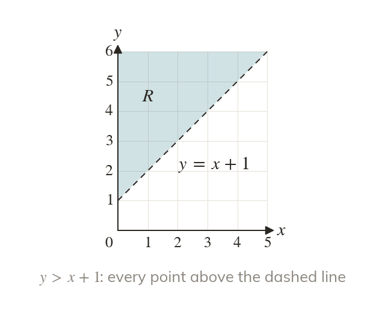
One side of a line
A line divides the graph into two sides. An inequality in x and y describes one whole side.
Planning problems come with limits, such as at most so many hours or at least so many items. Each limit is an inequality, and on a graph each one cuts away part of the plane, leaving the region that meets them all.
Work down the page at your own pace. Write every answer in your book first, then click to check it.
Read each card, then follow the worked examples one step at a time.

A line divides the graph into two sides. An inequality in x and y describes one whole side.
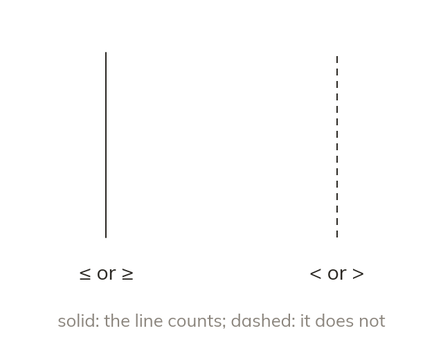
A solid boundary is included, for ≤ and ≥. A dashed boundary is not included, for < and >.
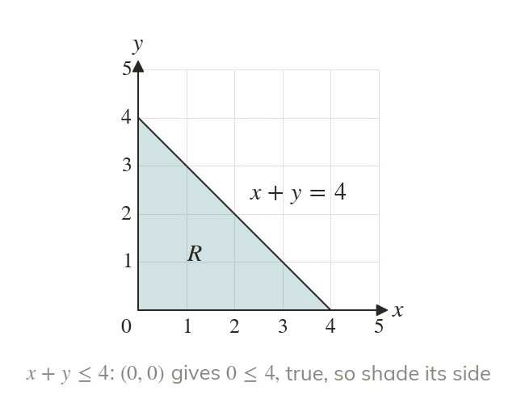
A point off the line decides the side. If it fits the inequality, its side is the region.
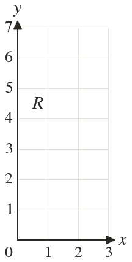
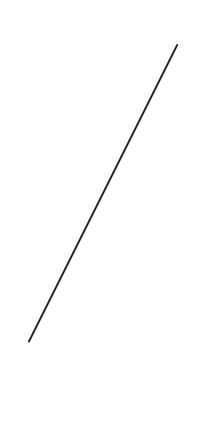
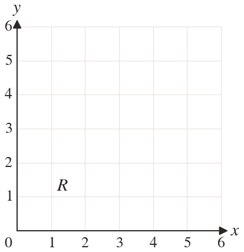
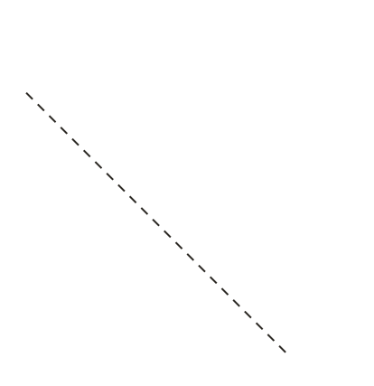
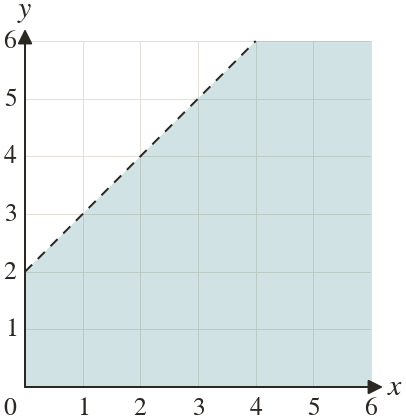
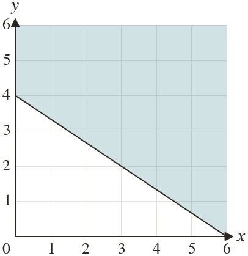
Pick an answer. If it's wrong, the feedback tells you which mistake it was.
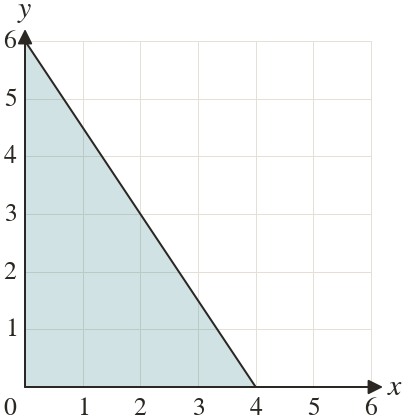
Write the blanks in your book first, then tap each one to check.
Printable worksheet — the questions with room to work.
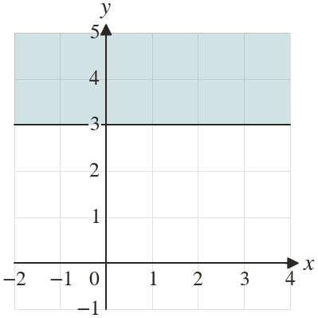
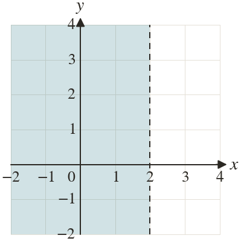
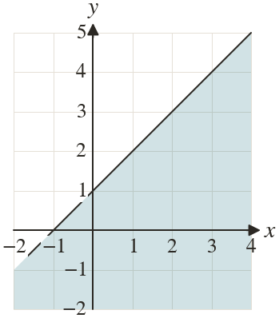
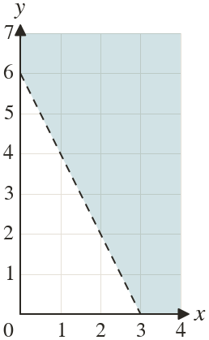
Read each card, then follow the worked examples one step at a time.
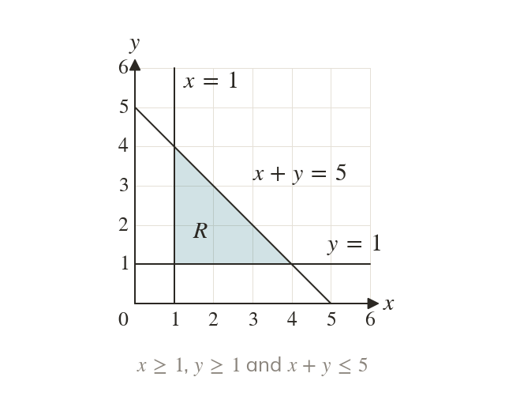
Each inequality gives its own region. R is where every one of them holds at once.
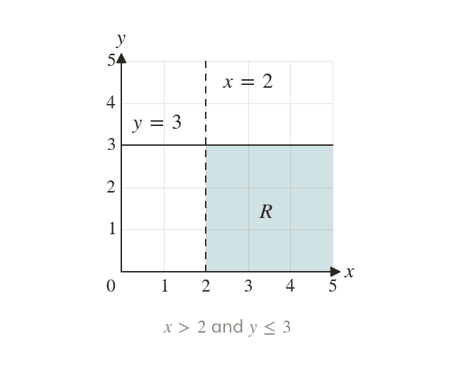
The region > a lies right of the vertical line = a. The region lies on or below
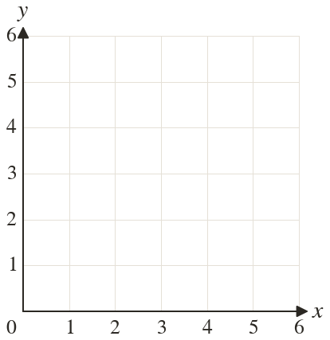
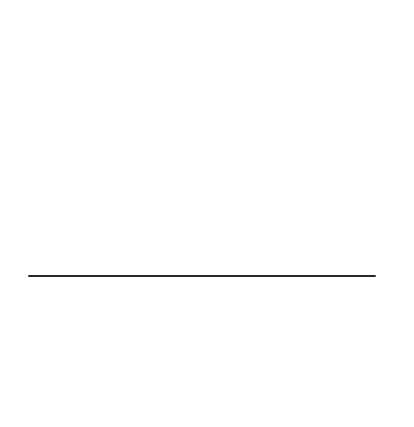
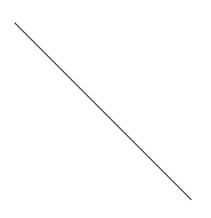
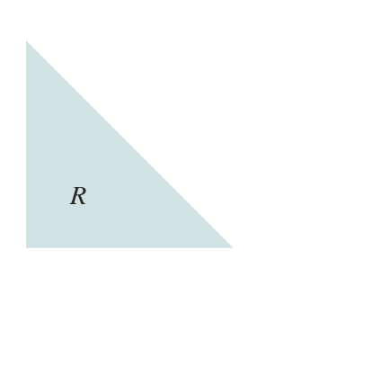
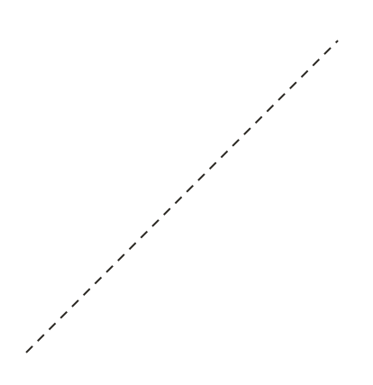
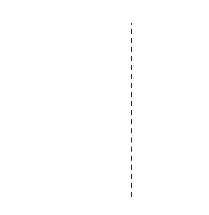
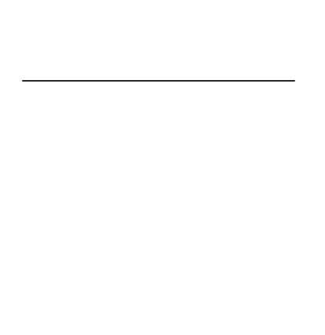
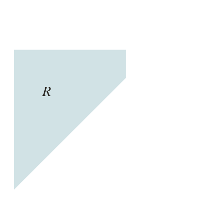
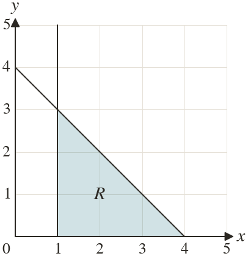
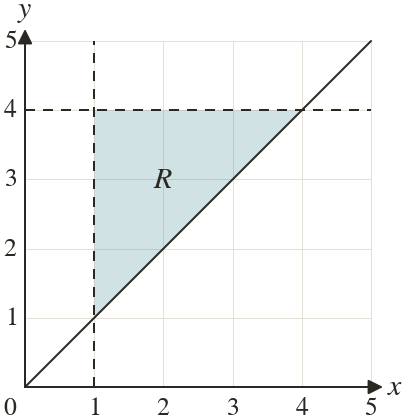
Pick an answer. If it's wrong, the feedback tells you which mistake it was.
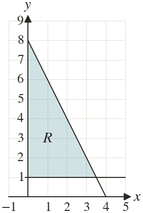
Write the blanks in your book first, then tap each one to check.
Printable worksheet — the questions with room to work.
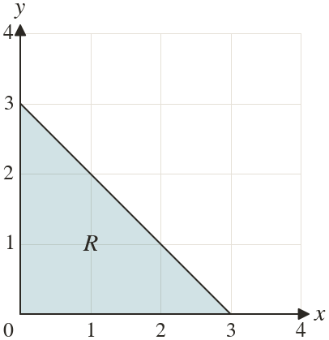
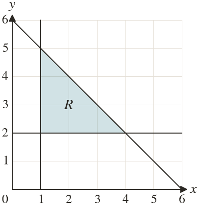
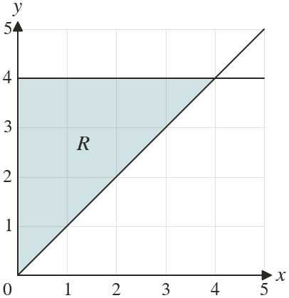
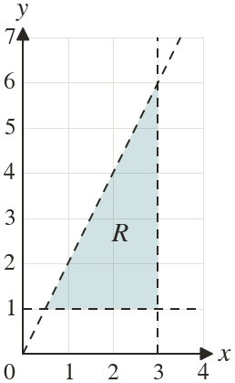
Finished? Next lesson: 10H.2.4 Describing Shaded Regions.
For each skill, tap the one that is true for you today. Your Revise pages start with anything you mark Not yet.
Your ratings are saved on this device only.
Log in, then search for a code to practise that skill.
Videos, worksheets and more on each part of this lesson.